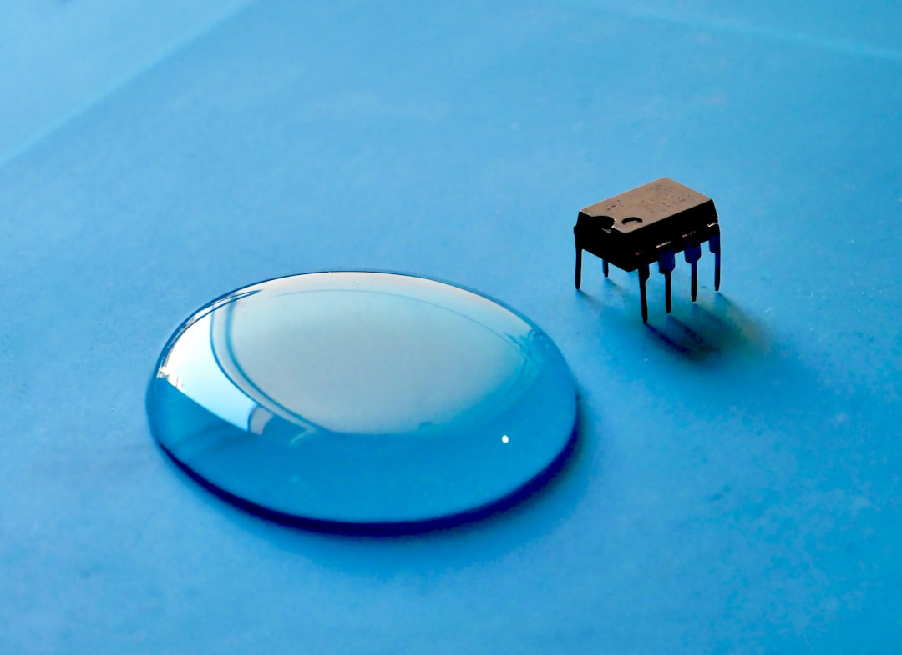

1600조 AI 삼각축, 소재 조달 루트 없으면 설계도만 남는다

이재명 대통령은 2025년 7월 AI·반도체·데이터센터를 '대체불가 대한민국 원년'의 3대 축으로 선언하고, 반도체 메가프로젝트 10조 원·AI 데이터센터 인프라 포함 총 1600조 원 규모 투자 계획을 공식화했다. 같은 시기 산업부는 소부장 지원 예산을 1700억 원·6개 첨단전략산업 분야로 확대했다.
문제는 규모가 아니라 소재 연결고리다. AI 서버 1랙당 탄탈럼 커패시터 약 2만 개, 전력 변환용 갈륨나이트라이드(GaN) 기판, 데이터센터 냉각 배관용 고순도 구리·인바 합금이 필요하다. 현재 국내 GaN 기판 자급률은 5% 미만, 탄탈럼 원료의 98%는 콩고·르완다산 수입에 의존한다.
한국의 AI 반도체 풀스택 포럼(2025년 7월)에서 논의된 설계-패키징-소재 수직 통합 전략은 방향성은 맞지만 민간 투자 집행 속도가 병목이다. 정부 R&D 과제 선정에서 소재 국산화 항목이 반영되는 데 통상 18~24개월이 소요되며, 실제 양산 라인 구축까지는 추가 3~5년이 필요하다.
호남 반도체 클러스터는 2025년 소부장 전략 포럼에서 차량용 반도체 소재로 특화 방향을 공식화했다. 차량용 SiC 기판과 GaN 전력 소자용 소재는 글로벌 수요가 2030년까지 연 22% 성장이 예상되는 구간으로, 호남 클러스터가 실제 양산 라인을 확보하면 현대차·기아 전장 공급망과 직결된다.
정부가 '선언'하는 순간 시장은 이미 그 다음 단계를 묻는다. 1600조 원 프로젝트의 실제 집행력은 데이터센터 핵심 소재인 탄탈럼·GaN·고순도 실리카 조달 계약이 체결되는 시점에 확인된다. 현재 국내 탄탈럼 커패시터 1차 가공 능력은 전량 수입 원료 기반으로, 콩고·르완다 분쟁광물 리스크를 그대로 떠안고 있다.
소부장 1700억 원 지원이 6개 분야로 분산되면 개별 프로젝트당 평균 280억 원 수준이다. GaN 기판 파일럿 라인 구축 비용이 최소 500억~800억 원임을 감안하면, 정책 자금만으로 양산 임계점에 도달하기 어렵다. 민간 투자·해외 전략적 파트너십 병행 없이는 소재 공백이 인프라 병목으로 전환된다.
단, 호남 차량용 반도체 클러스터는 실질 수혜 구간이 명확하다. 현대차그룹이 2030년까지 전동화 비율 80%를 목표로 하는 가운데, SiC 기판 국산화 성공 시 연간 2000억 원 이상의 수입 대체 효과가 예상된다. 소재 기업 투자자는 GaN·SiC 분야 소부장 기업 중 호남 클러스터 입주 혹은 협력 계약 체결 여부를 핵심 판단 지표로 삼아야 한다.
국내 SiC·GaN 기판 소재 기업: 호남 차량용 반도체 클러스터 특화 정책과 현대차그룹 전동화 로드맵이 교차하는 지점에서 가장 직접적인 수혜가 발생한다. SK실트론(SiC 기판 양산 추진), 웨이퍼스(고순도 실리콘) 등이 수혜 후보군이다.
탄탈럼·GaN 소재 국내 1차 가공 업체: AI 데이터센터 수요 급증으로 탄탈럼 커패시터 납기가 2025년 기준 16~22주로 늘어난 상황에서, 국내 1차 가공 역량을 보유한 업체는 삼성전기·삼화콘덴서 등의 우선 공급 계약 대상이 된다.
소재 조달 계획 없는 데이터센터 개발사: 정부 메가프로젝트 예산이 집행되기 전 민간 선투자로 AI 데이터센터를 추진하는 사업자 중 GaN 전력 소자·고순도 냉각재 조달 계약을 미확보한 곳은 2026~2027년 착공 지연 리스크에 노출된다.
소재 내재화 없이 완성품 조립에 집중하는 중소 EMS 업체: AI 서버 조립 수요가 늘어도 탄탈럼·GaN 소재 가격이 오르면 수익률이 역전된다. 1600조 원 투자 선언의 수혜가 조립 단계보다 소재 단계에 집중될 가능성이 높다.
소부장 투자 관련 종목을 검토하는 투자자는 '선언 수혜'와 '실행 수혜'를 구분해야 한다. 정책 발표 직후 급등한 종목 중 실제 GaN·SiC 기판 양산 계약 또는 데이터센터 소재 공급 MOU를 체결한 기업만이 2026년 실적으로 연결된다.
기업 구매담당자는 데이터센터 착공 전 탄탈럼 커패시터·GaN 모듈 조달선을 최소 2개 이상 확보하고, 콩고·르완다산 분쟁광물 대안으로 호주 GlobalAdvancedMetals·캐나다 Teck Resources 루트를 동시에 점검해야 한다.
호남 클러스터 차량용 SiC 특화 전략은 2025년 하반기 구체적 입주 기업 확정 일정이 공개될 예정이다. 해당 공고 시점이 실질적 투자 진입 신호다. 발표 전까지는 SiC 기판 글로벌 공급사(Wolfspeed, Coherent)의 한국 협력사 계약 동향이 선행 지표로 작동한다.
실제 조달 현장에서는 — 정부 메가프로젝트 선언 직후 GaN·탄탈럼 소재 문의가 급증하지만, 실제 구매오더(PO)는 6~12개월 지연 발행되는 패턴이 반복된다. 지금 당장 공급 계약서를 요구하는 데이터센터 발주처는 극히 드물다. 공급자 입장에서는 이 공백 구간에 재고를 확보하고 단가를 협상해두는 것이 핵심이다.
이 포스팅은 쿠팡 파트너스 활동의 일환으로 수수료를 제공받습니다.